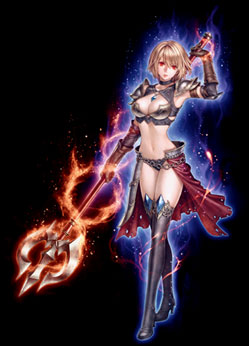
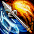

| エレメンタルランサー |
|  |
| 元素合成 |
|
<情報>
<持続時間>
- 着用刺青の数値だけ全ての属性数値が上昇
<説明>
- 着用している刺青の属性種類に関係なく、着用した刺青の数値だけ自分のすべての属性数値が上昇 |
<スキルタイプ>
専用パッシブスキル |
<前提スキル>
- なし |
<パワーアップ形態>
- なし |
| クレセントライトニング |
|
<情報>
- スキル難易度 3
- 必要CP 30
- 消費CP [n]
- 段階別ダメージ適用[50％〜130％]
- ターゲットと接近するほどダメージが増幅
<攻撃関連>
- ◆ 風ダメージ [n]~[n]
- ◆ 光ダメージ [n]~[n]
- 攻撃速度 武器速度
<説明>
- 魔力を込めた槍を地面に突き刺して槍を媒体に稲妻を召喚し、周囲に放射上の衝撃波を2回飛ばして感電させる。 |
<スキルタイプ>
専用強化スキル |
<前提スキル>
- ラジアルアーク Lv50 |
<パワーアップ形態>
- 威力, 範囲, 持続時間, 稲妻数 |
| スキルLv |
1（+0） |
1（+1） |
1（+2） |
1（+3） |
1（+4） |
1（+5） |
| 消費CP |
75 |
76 |
77 |
78 |
79 |
80 |
| 風ダメージ |
80〜160 |
81〜163 |
83〜166 |
84〜169 |
86〜172 |
87〜175 |
| 光ダメージ |
1〜161 |
1〜164 |
1〜167 |
1〜171 |
1〜174 |
1〜177 |
| 命中・回避率低下時間（秒） |
6.5 |
6.6 |
6.7 |
6.8 |
6.9 |
7 |
| 最大同時攻撃数 |
31 |
| 効果範囲（m） |
4.8 |
4.85 |
4.9 |
4.95 |
5 |
5.05 |
| ブレイズ・アンド・ブリザード |
|  |
<情報>
- スキル難易度 4
- 必要CP 60
- 消費CP [n]
- 敵の攻撃無視
- 段階別ダメージ適用[50％〜130％]
- ターゲットと接近するほどダメージが増幅
<攻撃関連>
- ◆ 炎ダメージ [n]~[n]
- ◆ 水ダメージ [n]~[n]
- 攻撃速度 武器速度
<説明>
- 槍の一端には炎、反対側には氷を召喚し、槍を旋回させて炎と氷が渦を描くように2回攻撃する。敵にダメージを与え、場合によっては凍りつかせる。 |
<スキルタイプ>
強化スキル |
<前提スキル>
- ファイアー・アンド・アイス Lv50 |
<パワーアップ形態>
- 威力, 範囲, 氷結時間 |
| スキルLv |
1（+0） |
1（+1） |
1（+2） |
1（+3） |
1（+4） |
1（+5） |
| 消費CP |
125 |
126.5 |
128 |
129.5 |
131 |
132.5 |
| 火ダメージ |
272〜320 |
277〜325 |
282〜330 |
288〜336 |
293〜341 |
298〜346 |
| 水ダメージ |
179〜187 |
183〜191 |
186〜194 |
190〜198 |
193〜201 |
197〜205 |
| 効果範囲（m） |
5 |
5.04 |
5.08 |
5.12 |
5.16 |
5.2 |
| 氷結時間（秒） |
6 |
6.1 |
6.2 |
6.3 |
6.4 |
6.5 |
| 氷結確率（％） |
50 |
| 信義 |
|
<情報>
- スキル難易度 2
- 必要CP 15
- 消費CP [n]
- 獲得CP [n]
<説明>
- 心の中で自分に対する信念を揺ぎ無きものにし、槍の魔法を使うための精神力を高める。瞬間的に物理攻撃力と魔法攻撃力が上昇。従来より持続時間が増加。 |
<スキルタイプ>
強化スキル |
<前提スキル>
- 信念 Lv50 |
<パワーアップ形態>
- キャスティング時間, 上昇攻撃力, 持続時間 |
| スキルLv |
1（+0） |
1（+1） |
1（+2） |
1（+3） |
1（+4） |
1（+5） |
| 消費CP |
40 |
40.5 |
41 |
41.5 |
42 |
42.5 |
| 獲得CP |
100 |
101.5 |
103 |
104.5 |
106 |
107.5 |
| キャスティング速度（秒） |
1.39 |
1.38 |
1.37 |
1.36 |
1.35 |
1.34 |
| 物理攻撃力上昇（％） |
27 |
27.5 |
28 |
28.5 |
29 |
29.5 |
| 純魔法攻撃力上昇（％） |
30 |
31 |
31 |
32 |
32 |
33 |
| 持続時間（秒） |
60 |